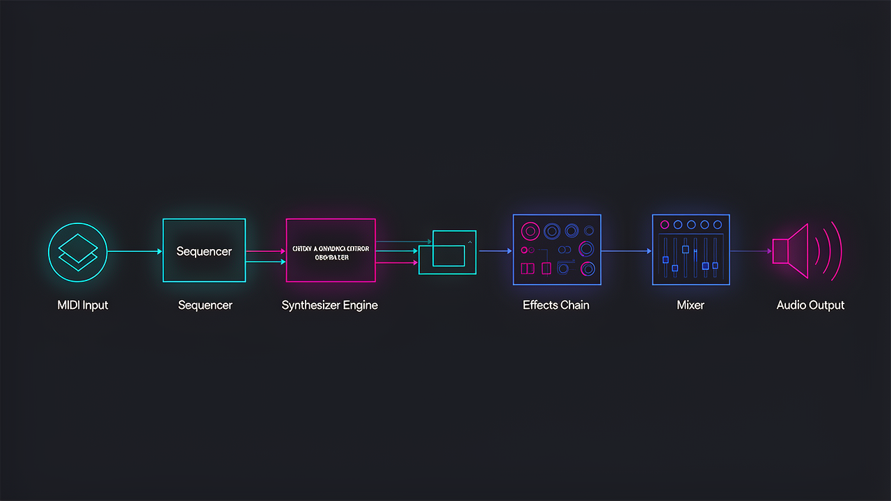

A deep dive into the AI-powered music generation system -- from raga grammar and swara conversion to MIDI synthesis and production pipelines.
A modular Node.js application with clear separation of concerns: data, services, generators, converters, and API layers.
graph LR A[Express Server] --> B[Raga DB
68+ Ragas] A --> C[Genre DB
8 Genres] A --> D[Instrument DB] A --> E[OpenAI
GPT-4] A --> F[Suno API
via Kie.ai] A --> G[R2 Storage
Cloudflare] A --> H[Frontend
HTML5 + Web Audio]
68+ ragas with complete Indian music theory: aaroha, avaroha, vadi, samvadi, pakad, thaat, time of day, mood, season, and difficulty. Organized by traditional time periods (4 AM to midnight).
OpenAI GPT-4 generates musically authentic compositions following Alap-Jor-Jhala structure with ornamentations (meend, gamak, kan swaras). Enforces aaroha/avaroha rules and emphasizes vadi/samvadi.
Converts AI-generated melody events to Standard MIDI Files (SMF Type 0) using midi-writer-js. Handles tempo mapping, velocity, instrument selection (GM Sitar default), and timing.
Renders melody to 44.1kHz 16-bit mono WAV using pure sine wave synthesis with ADSR envelope. Serves as pitch-accurate reference audio for Suno API production.
Two-tier generation via Kie.ai gateway: Quick mode (text prompt) and Authentic mode (WAV reference upload). Includes polling, download, and R2 upload pipeline.
S3-compatible object storage for generated tracks, MIDI files, and metadata. Persistent track library with JSON metadata for the frontend player.
A complete digital encoding of Hindustani classical music theory, mapping the ancient swara system to Western notation and MIDI.
graph LR A["Indian Notation
Sa Re Ga Ma Pa Dha Ni"] --> B["Western Notes
C D E F G A B"] B --> C["MIDI Numbers
60 62 64 65 67 69 71"]
| Swara | Western | Semi | Type |
|---|---|---|---|
| S | C | 0 | Fixed |
| r | Db | 1 | Komal |
| R | D | 2 | Shuddha |
| g | Eb | 3 | Komal |
| G | E | 4 | Shuddha |
| m | F | 5 | Shuddha |
| M | F# | 6 | Tivra |
| P | G | 7 | Fixed |
| d | Ab | 8 | Komal |
| D | A | 9 | Shuddha |
| n | Bb | 10 | Komal |
| N | B | 11 | Shuddha |
Case convention: uppercase = shuddha/natural, lowercase = komal/flat, M = tivra/sharp. Sa and Pa are fixed (achala) swaras.
Two generation modes power the system: Quick (prompt-only) and Authentic (full MIDI synthesis chain).
graph LR A[AI Melody Gen
GPT-4] --> B[MIDI Builder
midi-writer-js] B --> C[WAV Synthesizer
44.1kHz Sine] C --> D[R2 Upload
Cloudflare] D --> E[Suno Upload-Cover API
via Kie.ai] E --> F[Poll Status] F --> G[Download] G --> H[R2 Storage
Final Track]
graph LR A[Template Prompt
Raga + Genre] --> B[Suno Generate API
Text-to-Music] B --> C[Poll Status] C --> D[Download] D --> E[R2 Storage
Final Track]
graph LR A["Alap
35% of duration
Slow, meditative"] --> B["Jor
35% of duration
Rhythmic pulse"] B --> C["Jhala
30% of duration
Fast climax"]
Every raga can be rendered in any genre. The system maps raga moods to genre compatibility and adjusts BPM, instruments, and production style.
Express.js API with endpoints for raga data, generation, track management, and AI melody composition.
A clean UI with Web Audio API waveform visualization, filter panels, and native iOS integration via SwiftUI WebView.
Soft shadows, rounded corners, neutral palette. Browse by time of day, mood, thaat, or all ragas. Filter panel slides in from right with smooth transitions.
Real-time audio waveform using Web Audio API AnalyserNode. Animated frequency bars respond to playback, creating an immersive listening experience.
Native iOS app wraps the web app in WKWebView with SafeArea handling, native audio session integration, and App Store distribution.
Deployed to ragaradio.vercel.app with automatic builds. Express.js serverless functions handle API routes. Static assets served via CDN.
Web Audio API Waveform Visualization
AnalyserNode → getByteFrequencyData() → Canvas/DOM render loop